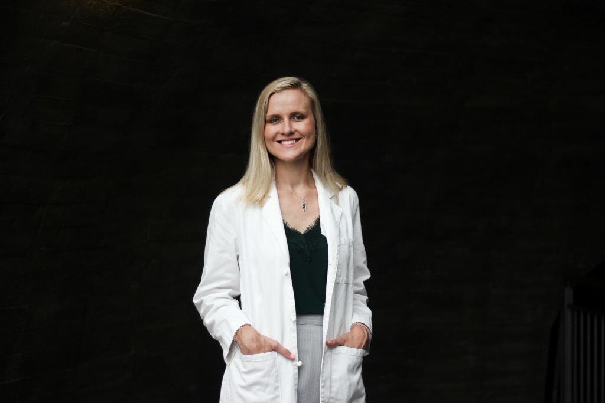
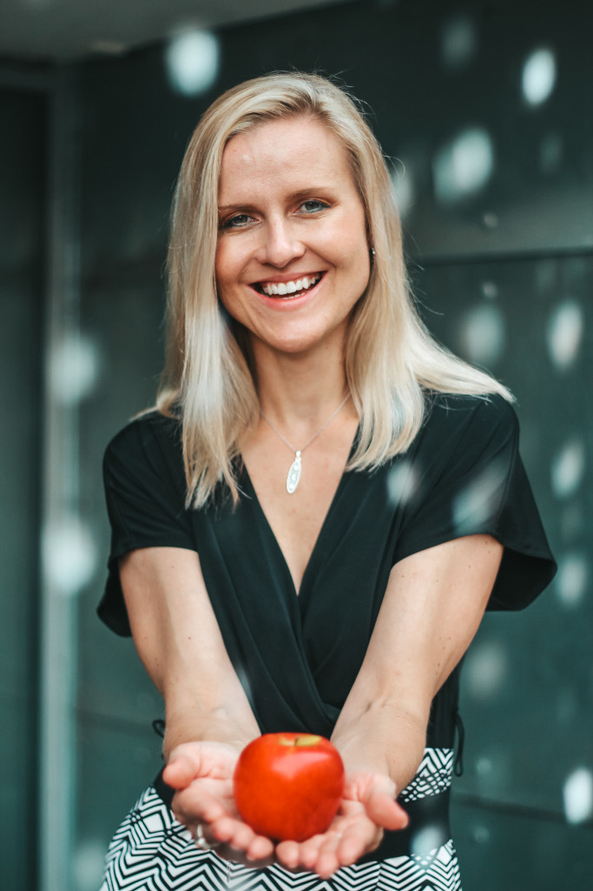
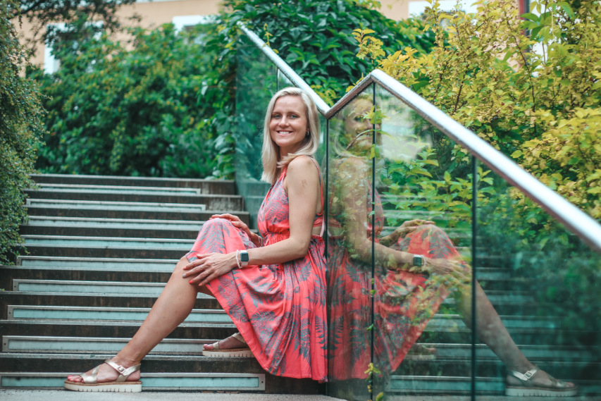
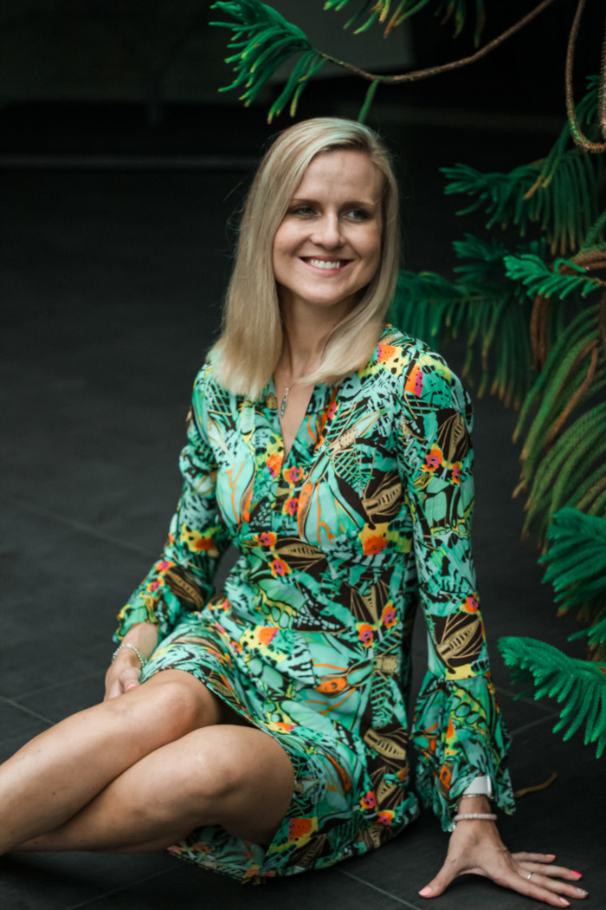

About
My name is Petra Dohnalova, and I’m a Board-certified Registered Dietitian Nutritionist (RDN) and a Lifestyle Medicine Practitioner. With extensive experience working in clinics and hospitals, I now focus on providing virtual nutrition counseling and online group classes designed to fit seamlessly into your busy lifestyle.
You might be wondering: What exactly is a registered dietitian? An RDN is a board-certified food and nutrition expert who provides personalized, evidence-based dietary guidance to improve health and manage medical conditions.


Now that we’ve got that covered, here’s a little more about me — I’m a passionate foodie. Why does that matter? Because working with someone who loves food means your meals will never be boring. I explore global cuisines for fun, so I know how to make healthy eating delicious, satisfying, and visually appealing. If you’re a fellow foodie, you know exactly what I mean.
I’m also a lifelong athlete. I may not have competed in the Olympics, but I’ve stayed active through all of life’s ups and downs, and I know firsthand how movement supports not only physical health but also mental well-being.
I share this because I don’t just teach healthy living — I live it. After years of learning, practicing, and refining what works, I’m here to guide you toward better health and well-being without all the guesswork. It doesn’t have to take a lifetime, and you don’t have to do it alone — I’ll help you work smarter, not harder.
Are you a busy professional who feels exhausted, overwhelmed, or stuck with early health issues like high blood pressure, prediabetes, or low energy? Do you already have chronic conditions that you are trying to manage? You want to feel better, but complicated diets or extreme lifestyle changes don’t fit your life. I get it — and I’m here to help.
I specialize in a plant-forward approach that fits your lifestyle — no pressure to go fully vegan, just flexible, practical steps that increase your energy, improve your health, and are sustainable for you.

Here’s what I can do for you:
- Show you how to eat more plants and whole foods in ways that fit your busy schedule and taste preferences.
- Support you with lifestyle medicine strategies — nutrition, sleep, stress, movement, and more — because your health depends on the whole picture.
- Help you reverse or manage chronic conditions like type 2 diabetes, hypertension, and high cholesterol with personalized, realistic plans.
- Guide young adults transitioning to vegan or plant-based diets, making sure they get all the nutrients they need confidently.
- Work with those managing long-term health issues to improve quality of life through compassionate, achievable strategies.

All my services are virtual — individual counseling and group classes — so you get expert support wherever you are, on your schedule.
If you’re ready to stop feeling tired and overwhelmed and start feeling vibrant, energized, and in control of your health, I’m ready to help you make it happen.